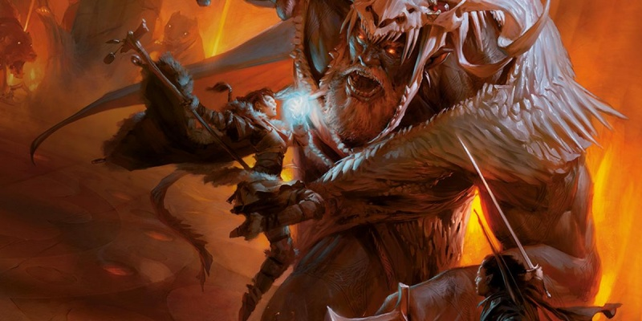

Règles optionnelles
Dans l'Unearthed Arcana de ce mois, nous présentons quelques variantes de règles que vous pouvez utiliser dans vos campagnes. Certaines de ces options seront peut-être familières aux joueurs des éditions antérieures de D&D, quelques-unes ayant déjà été présentées comme variantes dans les éditions précédentes.
Variante de règles : les joueurs lancent tous les dés
Cette variante fait que les joueurs lancent tous les dés d'un combat, y compris les jets d'attaque et de sauvegarde des monstres. En plaçant tous les jets de dés du côté des joueurs, cette option rend premièrement les choses plus simples pour vous en tant que MD. Mais aussi, plus vous gardez vos joueurs actifs à la table, plus ils seront engagés. Ceci est donc une bonne option si vos joueurs aiment lancer les dés, et si cela ne vous dérange pas de faire un peu de travail en amont pour que cela se produise.
Attaque et défense
Les joueurs lancent les attaques de leurs personnages comme d'habitude, mais vous ne lancez pas pour leurs adversaires. Au lieu de cela, quand un personnage est la cible d'une attaque, il fait un jet de défense. Un jet de défense a un bonus égal à la CA du personnage - 10 et le DD du jet est égal au bonus d'attaque de l'attaquant + 11. En cas de réussite, l'attaque manque, qu'elle ait été esquivée, absorbée par l'armure du personnage, etc. Si le personnage échoue à son jet de défense, l'attaque touche. Si l'attaquant devait normalement avoir un avantage au jet d'attaque, vous appliquez à la place un désavantage pour le jet de défense, et inversement si l'attaquant devait avoir un désavantage. Si le jet de défense est un 1 naturel, considérez alors l'attaque comme un coup critique. Si l'attaquant réalise normalement un coup critique sur un jet de 19 ou 20, alors l'attaque est un coup critique sur un 1 ou un 2, et ainsi de suite pour les plages de critique plus larges.
Test de jets de sauvegarde
Quand un personnage oblige un adversaire à réaliser un jet de sauvegarde, ce joueur fait au lieu de cela un test de jet de sauvegarde. Le bonus au d20 pour un test de jet de sauvegarde est égal au DD de l'effet - 8. Le DD pour ce test est de 11 + modificateur de jet de sauvegarde de la cible. En cas de réussite, le personnage surpasse la résistance de la cible et on traite la cible comme si elle avait raté son jet de sauvegarde. En cas d'échec, la cible est traitée comme si elle avait réussi sa sauvegarde. De même que pour les attaques, le jet de sauvegarde a un avantage si la cible devait avoir un désavantage à son jet de sauvegarde, et vice versa.
Oppositions et jets de caractéristique
Chaque fois qu'un PNJ ou qu'un monstre devrait normalement faire un jet de caractéristique, d'initiative, ou participer à une opposition, ni vous ni les joueurs ne jetez de d20. Au lieu de cela, utilisez les règles pour les jets passifs afin de déterminer le résultat. Voir le chapitre Caractéristiques du Manuel des Joueurs pour plus d'informations sur les jets passifs.
Règle optionnelle : vitalité
Certains MD trouvent que les points de vie sont problématiques. Un combattant peut survivre à une boule de feu, aux griffes déchirantes d'un troll, puis à une chute de 30 mètres, juste pour périr sous la dague d'un kobold. Cette règle optionnelle reflète de façon plus réaliste les blessures dont souffre un personnage.
Chaque personnage dispose d'une réserve de vitalité, en plus de ses points de vie. La vitalité maximale d'un personnage est égale à sa valeur de Constitution. Chaque fois qu'un personnage prend 10 ou plus points de dégâts d'une attaque ou d'un effet, le personnage perd de la vitalité. Divisez les dégâts par 10 et arrondir à l'inférieur. Le résultat indique combien de vitalité perd le personnage. En d'autres termes, un personnage perd 1 point de vitalité pour 10 points de dégâts d'une attaque ou d'un effet. Si un personnage subit un coup critique, doublez la perte de vitalité, de sorte que le personnage perd 2 points de vitalité pour 10 points de dégâts. Si un coup critique inflige moins de 10 points de dégâts, il réduit toutefois la vitalité de 1 point.
Perdre de la vitalité diminue le maximum de points de vie d'un personnage. Calculez donc le maximum de points de vie d'un personnage en prenant en compte sa vitalité au lieu de sa Constitution. Ainsi, lorsque la vitalité diminue, le modificateur de Constitution d'un personnage pour déterminer ses points de vie diminue également. Un personnage réduit à 0 point de vitalité est immédiatement réduit à 0 point de vie. Si un personnage est réduit à 0 point de vie, mais que sa vitalité est supérieure à 0, tout dommage supplémentaire est appliquée à la vitalité du personnage. Un personnage n'est pas inconscient si ses points de vie ou sa vitalité sont supérieurs à 0.
Terminer un repos long augmente la vitalité d'un personnage de 1 + modificateur de Constitution du personnage, jusqu'au maximum de vitalité du personnage. Les effets qui restaurent les points de vie sont sans effet sur la vitalité. Cependant, un personnage qui est au maximum de ses points de vie et qui reçoit des soins augmente sa vitalité de 1 point pour chaque 10 points de guérison.
Variante de règles : alignements modifiés
L'alignement est une étiquette pratique pour définir les attitudes générales des personnages et des monstres. Il fonctionne comme un mécanisme de tri, fournissant une image qui définit quelles créatures, factions ou PNJ font des alliés naturels ou des ennemis. Le système d'alignement standard englobe les points fondamentaux de tension dans D&D : la lutte entre le bien et le mal d'une part, et le conflit entre la loi et le chaos d'autre part. Cette organisation permet d'avoir de la tension même au sein d'un groupe d'alignement bon. La fracture loi chaos signifie en effet que des personnages peuvent tout de même être en désaccord sur la façon de promouvoir le bien dans le monde. L'alignement est donc destiné à servir uniquement de rapide résumé d'un personnage. Ce n'est pas une définition rigide, seulement un point de départ, et des éléments tels que les défauts et les liens proposent une image beaucoup plus détaillée de l'identité d'un personnage.
Mais vous pouvez trouver que les choix d'alignement entre le bien et le mal et la loi et le chaos sont trop abstraits pour votre campagne. Vous préférez en effet peut-être des attitudes plus nuancées, sans cette délimitation implicite entre les héros d'alignement bon et les méchants d'alignement mauvais. Une solution simple est alors de remplacer l'alignement par un système alternatif qui mettra les conflits clés de votre campagne au premier plan.
Identifier le conflit. Pensez aux forces adverses importantes de votre campagne en vous posant les questions suivantes. Pouvez-vous les placer aux extrémités opposées d'un continuum ? Y a t-il de multiples conflits ? Quels sont les principaux conflits, et comment tous ces conflits distincts interagissent entre eux ? Pour votre propre système d'alignement, essayez de créer au moins deux axes, dont l'un permet plusieurs options pour les personnages joueurs. Les autres axes peuvent diviser le monde entre les personnages (y compris leurs alliés) et leurs ennemis. Par exemple, imaginez un cadre de campagne où une crise écologique conçue par une cabale de nécromanciens menace de transformer le monde en un désert mort. Un axe d'alignement représentera les forces opposées de la vie et de la mort. Comme avec le choix entre le bien et le mal, ce conflit définit l'univers, et vous pouvez vous attendre à ce que la plupart des PJ soient du côté de la vie, ou au moins neutre par rapport à leur soutien aux plans des nécromanciens. Le deuxième axe de conflit pourrait être la préservation contre la destruction. Les gens qui se sont rassemblés pour protéger la terre pourraient être en désaccord sur l'opportunité d'attaquer et de détruire les nécromanciens, ou plutôt de travailler pour renforcer l'ordre naturel de sorte que même le pouvoir des nécromanciens ne puisse le renverser.
Choix multiples. Pour les jeux complexes qui évitent les classifications évidentes du bien contre le mal, vous pouvez créer des axes d'alignement avec plus de deux choix. Dans un jeu qui se concentre sur l'intrigue et les luttes de pouvoir, par exemple, l'alignement pourrait être une référence rapide pour déterminer quelle faction un personnage soutient. Un élément de l'alignement d'un personnage pourrait indiquer son affiliation avec une maison noble ou une guilde. Et un deuxième élément pourrait indiquer à quelle divinité ou panthéon un personnage est lié.
Alignement neutre. Lors de la création de votre système d'alignement, réfléchissez au rôle de la neutralité et déterminez si chaque axe d'alignement possède un point central. Des créatures neutres peuvent choisir de ne pas prendre part à une lutte (comme cela est souvent le cas avec le bien contre le mal) ou de voir des forces dans les deux approches (comme avec la loi contre le chaos). Le rôle de ce choix dans votre campagne devrait donner un sens à votre conflit central.

Écrit par Mike Mearls, traduit par blueace